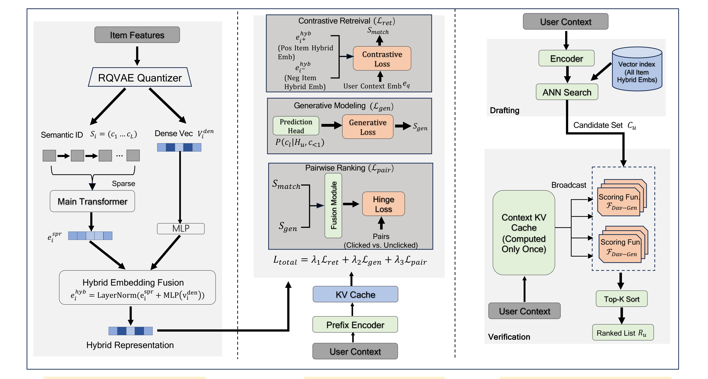
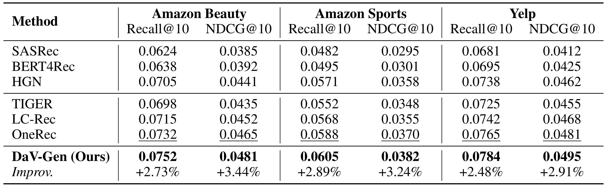
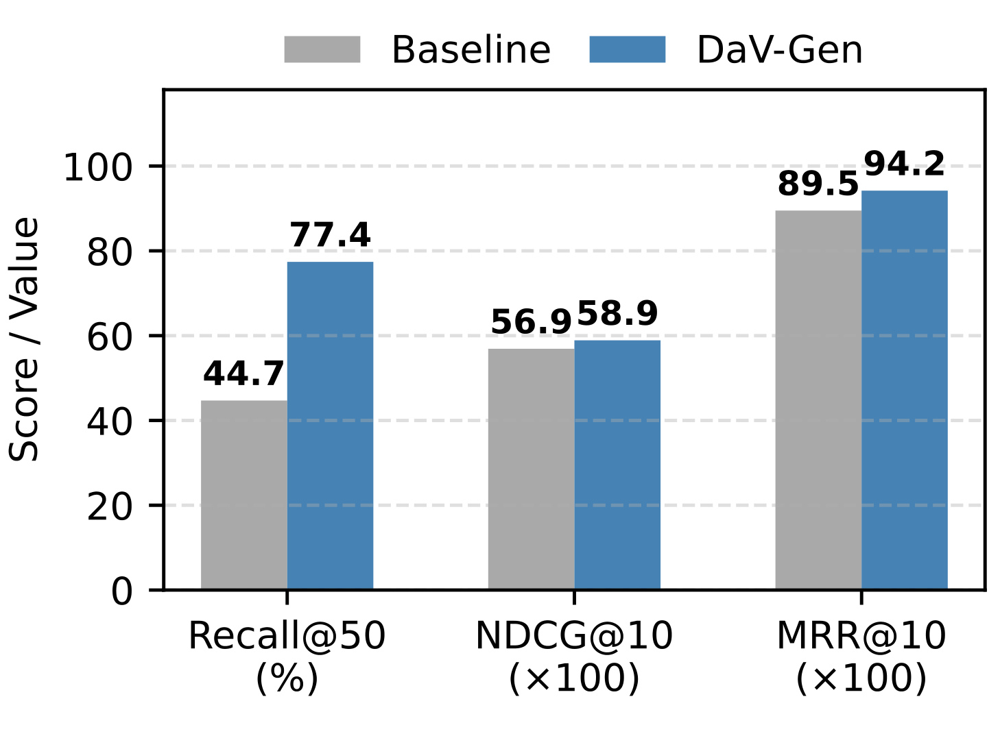
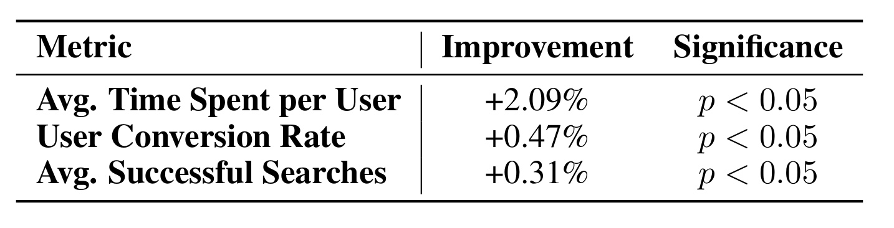
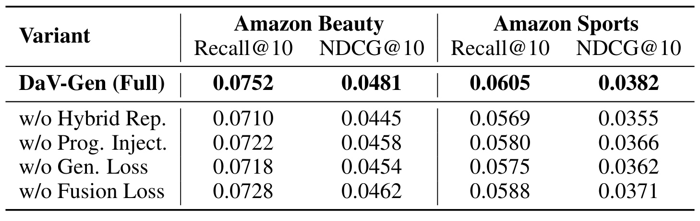

DaV-Gen：用 Draft-and-Verify 重构端到端生成式检索
DaV-Gen 是 HUJING Digital Media & Entertainment Group 的 Meng Zhao、Chunmei Liu 与 Qinyong Wang 提出的搜索推荐统一框架，前两位作者为共同一作，作者邮箱使用 alibaba-inc.com 域名。论文于 2026 年 7 月 9 日公开，并注明被 IJCAI 2026 接收。本文的唯一论文入口是 arXiv:2607.08365。本轮在摘要页和论文正文中均未核验到独立项目页或代码仓库，因此复现所需的训练数据处理、fusion network 结构与线上实现细节仍以论文描述为限。
工业搜索与推荐通常以多阶段级联平衡效果和效率，但各阶段目标不一致会让召回阶段的漏项不可逆地传到最终排序；端到端生成模型虽能统一目标，却受 decoder-only 自回归逐 token 解码拖累，线上时延高且难以确定性控制结果列表长度。
1. 背景和问题
大规模信息检索的经典做法是“先宽后精”：召回器从亿级物料中找到几百或几千个候选，预排序和精排再用越来越重的特征交互把它们压到最终展示列表。这样做的好处是每一层都能针对计算预算独立设计；坏处是每层面对不同训练标签和目标。召回侧常优化向量相似度或 Recall，排序侧优化点击、观看或转化。一件物料只要没有进入候选集，后面的复杂 ranker 就再也没有修复机会；即使进入候选，召回空间中的“相近”也不必然等于用户反馈中的“更该排前”。DaV-Gen 把这类误差传播概括为多阶段级联的 objective inconsistency。
生成式检索试图从结构上消除这条裂缝。它先用 RQ-VAE 一类量化器把物料表示成 Semantic ID 序列，再让语言模型根据用户历史或搜索 query 直接生成目标物料的离散 code。这样，理解上下文、选择物料和决定顺序可以落入同一条件生成目标；TIGER、LC-Rec、OneRec 等工作由此获得比传统原子 ID 更丰富的协同与语义信号。然而标准做法必须逐 token 生成一个 Semantic ID，又要逐 item 生成整张列表。前一个 token 没完成，后一个 token 就不能开始；前一件物料没决定，下一件也无法确定。随着列表长度、code 层数和 beam search 宽度增长，时延迅速累积。
论文用式（1）写出传统自回归推荐的负对数似然：
符号解释：\(T\) 是交互序列或待建模的物料步数，\(L\) 是每个 Semantic ID 的 token 数，\(c_l^{(t)}\) 是第 \(t\) 件物料的第 \(l\) 个 code。条件中同时出现先前物料 \(i_{<t}\) 和当前物料的先前 token \(c_{<l}^{(t)}\)，因此串行依赖有两层。它不是简单地“模型比较大”，而是计算图本身把列表生成变成链式过程。对需要几十毫秒响应的搜索服务，这种依赖比离线吞吐更致命。
DaV-Gen 的问题设定因而不是取消工业系统中所有粗排与精排概念，而是问：能否让同一个模型学会两种互补能力——先以可索引向量快速 draft 高召回候选，再以包含生成语义的 verifier 精细比较候选——同时把候选验证改为一次并行前向，而非逐物料生成。它借用了 speculative decoding 的“先草拟、再验证”思想，但 draft 不是一个较小生成模型，而是 ANN 向量检索；verify 也不是逐 token 接受或拒绝，而是对固定候选集融合向量匹配分数和生成似然后排序。
这个改写保留了两阶段运行形态，却试图通过共享表征、共享 backbone 与联合损失避免传统级联的目标割裂。需要特别区分“架构统一”和“计算完全单阶段”：线上仍有 vector index、候选集 \(N\) 和 Top-\(K\) 排序，真正的统一来自参数与训练信号，而不是把所有物料直接送进 Transformer。论文是否成功，必须同时看三件事：draft 是否有足够覆盖、verify 是否改善头部排序、端到端时延是否进入工业预算；只提升其中一项都不足以支撑其主张。还要检查两阶段是否真的被同一反馈信号校准：若向量空间只追求语义近邻，而 verifier 只追求点击顺序，共享一个模型名称也不会自动消除旧级联的矛盾。
2. 方法
2.1 从自回归生成检索到可验证候选
论文把搜索和推荐统一为条件检索。推荐上下文由交互序列 \(S_u\) 与用户画像 \(P_u\) 组成，搜索上下文则把 query \(q\) 与历史合并；为简化符号，两种情况都记作 \(H_u\)。物料 \(i\) 的内容特征先经预训练 RQ-VAE 量化为 \(S_i=(c_1,\ldots,c_L)\)。传统 GenIR 直接建模 \(P(S_{i_{t+1}}\mid H_u)\)，优点是 code 序列保留层级结构，缺点是式（1）的双重自回归依赖。
DaV-Gen 将“生成一件正确物料”拆为两个可协同训练的判断。第一个判断是几何的：上下文向量与哪些物料向量足够接近，可交给 MIPS/ANN 做全库检索。第二个判断是条件概率的：给定用户上下文，某个候选的 Semantic ID token 序列是否合理。候选之间不再存在生成先后关系，但单个候选内部仍保留 \(c_1\rightarrow c_2\rightarrow\cdots\rightarrow c_L\)，以免完全丢掉 codebook 的层级语义。由此，模型不是放弃 generative modeling，而是把它从候选获取器改造成候选验证信号。
2.2 渐进知识注入与混合稀疏—稠密表征
Semantic ID token 是新加入语言模型词表的离散符号，初始向量随机；若直接全参训练，领域 item code 与 PLM 既有语义空间之间的鸿沟可能导致不稳定甚至遗忘。论文先做双向自监督重建：给物料文本属性预测 Semantic ID，反过来给 Semantic ID 预测文本属性。第一阶段冻结 Transformer backbone，只更新新 token 的 embedding，使它们先靠近文本投影的语义位置；第二阶段再解冻全部参数，继续训练复杂的 item 结构和内容对应关系。这两步把“新 ID token 能被模型读懂”和“模型能用 ID 做领域推荐”分开处理，避免一开始就让所有参数追逐随机 code。
只有离散 ID 仍不够做高覆盖向量检索。RQ-VAE 量化后的 code 便于表达层级类别，却会舍弃量化前连续向量中的细粒度内容；仅使用连续向量又缺少 Semantic ID 经 backbone 上下文化后的结构信号。DaV-Gen 因而建立 hybrid embedding：稀疏结构分支把 \(S_i\) 输入主 Transformer，对最后隐藏状态做 mean pooling 得到 \(e_i^{\mathrm{spr}}\)；稠密内容分支直接取 RQ-VAE encoder 在量化前的 \(v_i^{\mathrm{den}}\)，经 MLP 映射到相同维度；两者相加并做 LayerNorm：
符号解释：\(e_i^{\mathrm{spr}}\) 汇集 Semantic ID code 的层级与上下文化信息，\(v_i^{\mathrm{den}}\) 保留量化前内容细节，MLP 负责维度和分布对齐，\(e_i^{\mathrm{hyb}}\) 既是离线写入全库 vector index 的 item anchor，也是训练和验证阶段的匹配基准。这里的“Sparse-Dense”不是把稀疏特征与稠密特征简单拼接，而是指离散结构 token 与连续内容信号在固定长度向量中的融合。
2.3 对比式 draft、生成式建模与融合 pairwise verify
符号解释：SFT 总目标由三部分加权，\(\mathcal{L}_{\mathrm{ret}}\) 服务于向量 draft，\(\mathcal{L}_{\mathrm{gen}}\) 提供 item 内部 token 的生成语义，\(\mathcal{L}_{\mathrm{pair}}\) 直接校准最终 verify 排序；\(\lambda_1,\lambda_2,\lambda_3\) 控制三者权重。论文没有把共享参数本身等同于目标一致，而是用第三个 pairwise 目标把前两个分数真正接到最终排序偏好上。对比式 draft 随后对 batch \(B\) 中的每个上下文构造正物料 \(i^+\) 和 batch 内负物料集合 \(C_u\)，以温度缩放的 cosine similarity 做拉近推远：
符号解释：\(e_q\) 是用户或查询上下文向量，\(e_k^{\mathrm{hyb}}\) 是物料 hybrid embedding，\(\tau\) 控制分布尖锐程度。该目标的直接产物不是最终点击分，而是适配 MIPS 的向量空间：正样本靠近 query，众多负样本被推远，ANN 才能快速找到较高覆盖的候选。batch 内负采样降低训练成本，但也意味着负样本难度和 false negative 会直接影响 draft 空间。与此互补，生成损失对每个候选独立计算，但保留候选内部的 token 顺序：
符号解释：\(H_u\) 是上下文，\(c_l\) 是正物料 Semantic ID 的第 \(l\) 个 token。该分数回答的不是“向量上是否相近”，而是“这件候选的层级 code 在当前用户上下文下有多大生成合理性”。论文将负对数似然转为 \(s_{\mathrm{gen}}\)，与向量匹配 \(s_{\mathrm{match}}\) 输入一个非线性 fusion network：
符号解释：\(\sigma(i)\) 才是 verify 使用的最终候选分。非线性融合允许模型学习“语义近但生成不合理”或“生成合理但向量覆盖不足”等组合，而不是手工相加两个量纲不同的分数。
为了让 \(\sigma\) 对业务偏好可排序，论文构造两类 pair。\(S_{\mathrm{hard}}\) 是同一 session 中点击物料 \(i\) 与未点击曝光物料 \(j\)，用于学习细粒度难负样本；\(S_{\mathrm{rand}}\) 是曝光物料 \(i\) 与随机全库负样本 \(k\)，用于建立全局分数基线。二者共同进入 margin hinge loss：
符号解释：\(m\) 是期望的正负分差。hard pair 迫使 verifier 区分“都获得曝光但反馈不同”的候选，calibration pair 则防止模型只会在局部难样本间排序、却失去对随机无关物料的全局区分。这里的点击监督仍会继承曝光偏差，不能直接等同于真实相关性；但它至少使最终分数不再只由 proxy loss 决定。
2.4 并行 Draft-and-Verify 推理
训练完成后，全库物料的 \(e_i^{\mathrm{hyb}}\) 预先写入向量索引。在线先编码上下文得到 \(e_q\)，通过 ANN 固定取 \(N\) 个候选：
符号解释：\(E_{\mathcal I}=\{e_i^{\mathrm{hyb}}\mid i\in\mathcal I\}\) 是全库向量，\(C_u\) 是 draft candidate set。\(N\) 显式控制 verify 计算量，不再由自回归何时生成结束决定。随后，用户上下文只编码一次得到 KV cache，并广播给所有候选；模型在一个并行 forward 中计算：
符号解释：候选共享同一个上下文前缀，避免把长度为 \(|H_u|\) 的历史重复编码 \(N\) 次。训练生成损失仍在 item 内按 token 建模，但推理时各 candidate 的 token 计算可在 batch 维并行；最终按融合分降序并截取固定长度：
符号解释：\(L_u\) 是全部候选按 verifier 分数排序的列表，\(K\) 是线上展示长度。论文将这种并行 scoring 描述为相对于长度 \(L\) 的自回归生成由 \(O(L)\) 变成 \(O(1)\)；更准确的工程理解是串行步数不再随候选数线性增长，而总 FLOPs、显存和 attention 计算仍随 \(N\)、Semantic ID 长度与 batch 组织变化，并非真实计算量常数。

Figure 1 应从左到右读。左栏把 item features 同时送入 RQ-VAE：量化后的 Semantic ID 经主 Transformer 得到结构向量，量化前 dense vector 经 MLP 保留细粒度内容，二者在 hybrid embedding 中汇合。中栏显示同一上下文如何驱动三种训练信号：contrastive loss 约束 query 与正负 item anchor，generative loss 从 token likelihood 提取 \(s_{\mathrm{gen}}\)，pairwise 模块再把 \(s_{\mathrm{match}}\) 与 \(s_{\mathrm{gen}}\) 融合后接受点击偏好监督。右栏则明确线上没有逐 item 生成：上半部 ANN 只负责 draft，下半部一次计算的 context KV cache 被广播给所有 scoring function，最后 Top-K sort。图中仍有 vector index 和 candidate set，说明论文解决的是训练与模型目标的统一，不是物理上消灭候选阶段；其时延优势依赖预计算索引、候选并行度和 cache 复用是否在实际硬件上成立。
3. 实验结果
3.1 公开推荐数据集上的主结果
公开实验使用 Amazon Beauty、Amazon Sports 和 Yelp，采用 leave-one-out 评估。对比方法包括 SASRec、BERT4Rec、HGN 等判别式序列模型，以及 TIGER、LC-Rec、OneRec 等生成或统一检索模型。所有模型 embedding dimension 设为 64；TIGER、OneRec 与 DaV-Gen 都使用五层层级量化 codebook。DaV-Gen 以 Adam、学习率 \(10^{-5}\)、batch size 256 训练。这样的统一维度有助于控制表征容量，但论文没有报告 backbone 参数量、预训练语料、训练轮数与硬件，尚不能据此判断总训练成本是否公平。
六项主指标上，DaV-Gen 均高于最强基线 OneRec。Beauty 的 Recall@10 从 0.0732 到 0.0752、NDCG@10 从 0.0465 到 0.0481，相对提升 2.73% 与 3.44%；Sports 从 0.0588/0.0370 到 0.0605/0.0382，相对提升 2.89%/3.24%；Yelp 从 0.0765/0.0481 到 0.0784/0.0495，相对提升 2.48%/2.91%。结果方向一致，说明优势不是单一数据集偶然翻转；但绝对增量处于千分位，论文未给多随机种子标准差或显著性，不能把表中相对百分比直接理解为稳定线上收益。

Table 1 的行顺序让比较层次很清楚。SASRec、BERT4Rec、HGN 是传统判别式参照，TIGER 和 LC-Rec 是 Semantic ID 自回归生成模型，OneRec 是表中最强的统一框架，DaV-Gen 位于最后。三组数据集各含 Recall@10 与 NDCG@10：前者检查目标物料是否进入前十，后者强调正确结果是否更靠前。DaV-Gen 不仅 Recall 领先，NDCG 也同步上升，和“draft 覆盖 + verify 次序”两方面共同改善的叙事相符。与此同时，表格只提供最终完整模型，不能从主结果区分提升究竟主要来自 hybrid embedding、渐进注入还是 pairwise fusion；该问题需要结合 Table 3。Improve 行相对 OneRec 计算，适合展示相对增益，却会放大较小的绝对差值，阅读时应同时保留原始小数。
3.2 工业搜索：100M 物料与 500M 日志
Ind-Search 来自大型视频搜索引擎，规模超过 1 亿物料和 5 亿条搜索日志。检索侧以微调的 gte-qwen-7b dense retriever 为对照，排序侧以线上 MoE 模型为对照；因此图中的 Baseline 不是三项指标都来自完全相同的一个模型。DaV-Gen 的 Recall@50 为 77.4%，dense baseline 为 44.7%，绝对增加 32.7 个百分点；NDCG@10 从 0.569 到 0.589，MRR@10 从 0.895 到 0.942。图中后两项为便于展示乘以 100，分别写作 56.9/58.9 和 89.5/94.2。

Figure 2 把工业效果拆成三个柱组。Recall@50 的巨大差距主要对应 candidate drafting，作者据此认为 hybrid sparse-dense representation 能捕获纯 dense vector 漏掉的视频搜索语义；NDCG@10 和 MRR@10 的较小但一致提升对应 verification 对头部次序的影响。尤其 MRR 更关注第一个正确结果的位置，从 0.895 到 0.942 支撑 verifier 能把优质候选前移。证据也有明显边界：图没有展示不同 ANN 索引参数、候选集 \(N\) 或向量内存预算下的 recall-latency 曲线；gte-qwen-7b 和 hybrid index 的训练数据、负采样与索引配置也未逐项展开。因此 32.7 个点的差距说明该生产设定有效，却还不能单独归因于某一个表征公式。
3.3 在线 A/B 与服务时延
论文在大型视频平台以百万用户流量运行一周在线 A/B，关注三项指标：ATS 是曝光用户的人均观看时长，UCVR 是发生至少一次视频播放的用户占曝光用户比例，ASS 是每曝光用户产生的成功搜索次数。相对生产 baseline，DaV-Gen 的 ATS 提升 2.09%、UCVR 提升 0.47%、ASS 提升 0.31%，三项均标记 \(p<0.05\)。三项分别覆盖停留、曝光到消费转化和搜索满足度，比单一 CTR 更接近搜索产品的完整价值链。

Table 2 最强的地方是三项业务指标方向一致且提供显著性门槛，而不只是离线 Recall/NDCG。ATS 的 2.09% 增幅最大，作者把它解释为 fine-grained verifier 更能把高参与内容排前；UCVR 和 ASS 的提升较小，但至少没有出现“观看更久、搜索成功反而下降”的明显冲突。表中没有绝对基线、置信区间、实验组流量比例、用户分层，也未披露延迟超时率、结果多样性或内容生态 guardrail，因此无法判断收益集中于哪些 query 或用户，也不能排除热门内容偏置。\(p<0.05\) 只说明在作者采用的统计检验下拒绝零差异，不代表效果量足够大或可跨平台复现。
服务时延是 DaV-Gen 的另一条主证据。论文报告纯自回归生成模型约 3 秒，生产级 Query Processing → Recall → Pre-Ranking → Ranking 级联约 130ms，DaV-Gen 约 70ms。70ms 相比 3 秒确实跨越数量级，足以说明 parallel verification 比逐 item 解码更接近实时服务；相比 130ms 也减少约 60ms。不过正文同时声称相对传统级联达到 2.5 倍加速，而 \(130/70\approx1.86\)，两者算术并不一致。可能原因包括“传统级联”采用了另一时延分位、比较范围不同或 70ms 只覆盖部分组件，但论文没有给出分解。因此最稳妥的结论是作者报告 DaV-Gen 的端到端时延约 70ms，明显低于其给出的 130ms 级联与 3s 生成参照；2.5 倍口径仍需代码或服务剖析核验。
3.4 消融：表征、知识注入和两类评分信号
Table 3 在 Beauty 与 Sports 上分别移除四个组件。去掉 Hybrid Representation、只靠 sparse ID 时，Beauty Recall@10 从 0.0752 降至 0.0710，约下降 5.6%，也是该表最大跌幅；Sports Recall@10 从 0.0605 降至 0.0569。跳过 progressive embedding alignment、直接全参注入时，Beauty 为 0.0722/0.0458，Sports 为 0.0580/0.0366，说明随机 Semantic ID token 与 PLM 语义空间之间确实需要过渡。

Table 3 还区分了生成信号和最终融合。去掉 \(\mathcal{L}_{\mathrm{gen}}\) 后，Beauty Recall/NDCG 为 0.0718/0.0454，Sports 为 0.0575/0.0362，表明单靠 contrastive geometry 与 pairwise 偏好不足以恢复 item code 的细粒度组合语义。去掉 Fusion Loss 后的结果是 0.0728/0.0462 与 0.0588/0.0371，下降相对较小但四项一致，支持 pairwise 目标在最终次序校准中有效。结合完整模型看，hybrid representation 主要决定候选信息量，generative loss 补充上下文条件下的 token 合理性，fusion pairwise 决定两类分数如何映射为业务偏好；渐进注入则保障这些信号能稳定落入 PLM。表格仍缺少组合消融、仅 dense/仅 sparse 的对称比较、不同 \(\lambda\)、margin \(m\)、candidate \(N\) 与 Top-\(K\) 的敏感性，也没有把每个组件增加的训练和推理成本并列，因此只能证明“移除会变差”，尚不能确定当前配置是最优成本点。
综合四组实验，证据链大体闭合：公开数据集验证一般推荐准确率，Ind-Search 验证亿级搜索规模，在线 A/B 验证业务方向，消融验证核心模块。但论文篇幅只有 8 页，复现信息偏少。尤其工业搜索超大幅 Recall 提升和 70ms 时延都高度依赖数据处理、索引构建、候选规模、GPU batch 与线上特征口径；在这些条件未公开前，更适合把结果视为强工业案例，而不是对任意 GenIR 系统都成立的普遍定律。
4. 总结
DaV-Gen 最有价值的贡献，是把生成式检索的“统一目标”与工业向量检索的“可服务性”放到同一条训练—推理链路里。它没有要求模型在线逐 token 创造候选，而是用 hybrid embedding 支撑 ANN draft，用 item 内生成似然补足单纯几何相似度，再用点击/曝光 pairwise loss 学习最终 fused verifier。这样既保留 Semantic ID 的层级建模能力，也获得固定 \(N\)、固定 \(K\) 和并行 candidate scoring。公开推荐、工业搜索、在线 A/B 与消融的方向基本一致，说明方法不是只在一个离线表格上成立。
对推荐系统工程，最可迁移的是三点。第一，召回和排序可以共享 item anchor 与 backbone，但仍需显式最终偏好损失，不能把参数共享当成目标对齐。第二，生成模型未必要承担候选枚举；把 token likelihood 变成 verifier feature，可能比完整生成更适合严格时延预算。第三，量化前 dense content 和量化后 Semantic ID 的互补值得用于多模态 item tower，作者也把视觉、音频 dense vector 扩展列为后续方向。对大模型/RAG 系统，这一范式提示检索器与生成器之间不必只靠串联：可以联合训练 indexable representation 与生成条件分，再用可校准的 pairwise objective 约束最终证据顺序。
局限至少有四项。其一，代码与项目页未核验到，fusion network、backbone、数据清洗和索引配置不充分，工业结果难以复现。其二，点击/未点击与曝光/随机 pair 带有 position、exposure 和 popularity bias，所谓统一优化并没有消除反馈偏差。其三，论文把并行步数称为 \(O(1)\)，但真实资源仍随候选 \(N\)、code 长度和并行 batch 增长；未报告显存、QPS、P95/P99 与索引更新成本。其四，线上 A/B 缺少绝对值、流量切分、置信区间和生态 guardrail，时延的“2.5 倍”又与 70ms/130ms 直接比值不一致。其五，公开实验只用 leave-one-out 和三个数据集，尚未覆盖冷启动、长尾、多兴趣冲突与跨域泛化。
后续最值得做的验证有四步：复现 Table 1 和 Table 3，并补齐多随机种子方差；扫描 \(N\)、\(K\)、\(\lambda_{1:3}\)、margin 与 ANN recall/latency，画出精度—时延—显存前沿；将 fusion 与简单加权和、纯 cross-encoder reranker、仅 dense/仅 sparse 做同预算对照；在工业或近似工业数据上拆解 70ms 的 encoder、ANN、KV cache、parallel verifier 和 sort 成本，同时核对 P95/P99。只有这些信息补齐后，才能判断 DaV-Gen 是一个可复用的通用范式，还是高度依赖特定平台数据与 serving 栈的优秀实例。